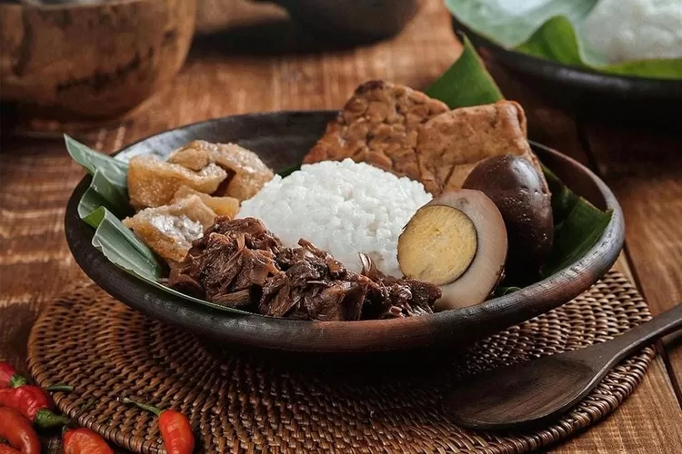

The most popular dish in Indonesian Yogyakarta is called gudeg, a unique dish made with unripe jackfruit cooked in coconut milk. The two most common varieties are dry and wet gudeg. Both varieties use the same Ingredients, but the dry gudeg uses less coconut milk, is cooked longer, and has a much thicker sauce.
Meal prep time : 2 hours 45 minutes
Servings : 3